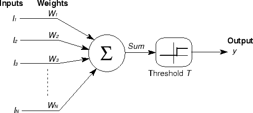
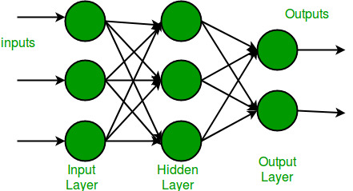

Redes Neurais Artificiais: Guia Completo¶
Sumário¶
- Introdução
- Fundamentos Biológicos
- Neurônio Artificial
- Perceptron
- Multilayer Perceptron (MLP)
- Algoritmos de Treinamento
- Funções de Ativação
- Regularização e Otimização
- Aplicações Práticas
- Exercícios e Projetos
Introdução¶
As Redes Neurais Artificiais (RNA) são modelos computacionais inspirados no funcionamento do sistema nervoso biológico. Elas representam uma das abordagens mais poderosas e versáteis do aprendizado de máquina, capazes de:
- Aprender padrões complexos em dados
- Aproximar funções não-lineares arbitrárias
- Resolver problemas de classificação, regressão e clustering
- Processar diferentes tipos de dados (imagens, texto, séries temporais)
Por que estudar Redes Neurais?¶
- Versatilidade: Aplicam-se a diversos domínios
- Poder expressivo: Podem modelar relações complexas
- Evolução contínua: Base para Deep Learning e IA moderna
- Resultados práticos: Solucionam problemas reais
Fundamentos Biológicos¶
O Neurônio Biológico¶
O neurônio é a unidade fundamental do sistema nervoso, composto por:

Dendritos → Soma → Axônio → Sinapses
↑ ↑ ↑ ↑
Entrada Processamento Transmissão Saída
Componentes principais:¶
- Dendritos: Recebem sinais de outros neurônios
- Soma (corpo celular): Integra e processa os sinais
- Axônio: Transmite o sinal processado
- Sinapses: Conexões com outros neurônios
Processo de Comunicação Neural¶
- Recepção: Dendritos captam neurotransmissores
- Integração: Soma pondera e combina os sinais
- Limiar: Se o potencial excede um limiar, o neurônio "dispara"
- Transmissão: Sinal elétrico percorre o axônio
- Liberação: Neurotransmissores são liberados nas sinapses
Neurônio Artificial¶
Modelo Matemático¶
O neurônio artificial é uma abstração matemática do neurônio biológico:

x₁ ──w₁──┐
x₂ ──w₂──┤
... ├─→ Σ ──→ f(net) ──→ y
xₙ ──wₙ──┘
b ───┘
Equações fundamentais:¶
Net Input (Entrada líquida):
net = Σ(wᵢ × xᵢ) + b = w₁x₁ + w₂x₂ + ... + wₙxₙ + b
Saída:
y = f(net)
Onde:
- xᵢ: Entradas do neurônio
- wᵢ: Pesos sinápticos
- b: Bias (limiar)
- f: Função de ativação
- y: Saída do neurônio
Funções de Ativação Clássicas¶
1. Função Degrau (Step Function)¶
f(x) = { 1, se x ≥ 0
{ 0, se x < 0
2. Função Sigmóide¶
f(x) = 1 / (1 + e^(-x))
3. Função Tangente Hiperbólica (tanh)¶
f(x) = (e^x - e^(-x)) / (e^x + e^(-x))
4. Função ReLU (Rectified Linear Unit)¶
f(x) = max(0, x)
Perceptron¶
Conceito e História¶
O Perceptron, desenvolvido por Frank Rosenblatt em 1957, foi o primeiro algoritmo de aprendizado para redes neurais que garantia convergência para problemas linearmente separáveis.
Arquitetura do Perceptron¶
Entrada → Pesos → Soma → Ativação → Saída
x₁,x₂,...,xₙ → w₁,w₂,...,wₙ → Σ → f → y
Algoritmo de Treinamento¶
Pseudocódigo:
1. Inicializar pesos aleatoriamente
2. Para cada época:
a. Para cada amostra (x, d):
- Calcular saída: y = f(Σwᵢxᵢ + b)
- Calcular erro: e = d - y
- Atualizar pesos: wᵢ = wᵢ + η × e × xᵢ
- Atualizar bias: b = b + η × e
3. Repetir até convergência
Parâmetros:
- η (eta): Taxa de aprendizado
- d: Saída desejada
- e: Erro
Teorema da Convergência¶
Teorema: Se os dados são linearmente separáveis, o algoritmo Perceptron converge em um número finito de iterações.
Limitações do Perceptron¶
- Separabilidade linear: Só resolve problemas linearmente separáveis
- Problema XOR: Não consegue resolver o XOR
- Função de ativação: Limitado a funções lineares por partes
Multilayer Perceptron (MLP)¶
Superando as Limitações¶
O MLP resolve as limitações do Perceptron através de:
- Camadas ocultas: Permitem não-linearidade
- Múltiplas camadas: Aumentam poder expressivo
- Backpropagation: Algoritmo de treinamento eficiente
Arquitetura MLP¶

Camada de Camada(s) Camada de
Entrada → Oculta(s) → Saída
x₁ ──────┐ h₁ ────────┐ y₁
x₂ ──────┤ h₂ ────────┤ y₂
... ├─→ ... ────────┤→ ...
xₙ ──────┘ hₘ ────────┘ yₖ
Teorema da Aproximação Universal¶
Teorema: Uma rede neural com uma única camada oculta e um número suficiente de neurônios pode aproximar qualquer função contínua com precisão arbitrária.
Regras Práticas para Arquitetura¶
Historicamente, quando redes neurais eram menores e o custo computacional mais alto, surgiram algumas heurísticas para estimar o tamanho inicial da camada oculta em redes totalmente conectadas (MLPs).
Essas regras não são leis fixas, mas podem servir como ponto de partida:
Número de neurônios na camada oculta:¶
-
- Regra dos ⅔: $$ \text{neurônios ocultos} \approx \frac{2}{3} \times (\text{neurônios de entrada}) + \text{neurônios de saída} $$
Ideia: reduzir a dimensionalidade da entrada mantendo espaço para representar as saídas.
-
- Média geométrica
Ideia: buscar um equilíbrio proporcional entre o tamanho da entrada e o tamanho da saída.
-
-
Experimentação incremental (abordagem mais usada atualmente)
-
Comece com uma rede pequena.
- Monitore as métricas de treinamento e validação.
- Aumente gradualmente a quantidade de neurônios até atingir bom desempenho sem sobreajuste (overfitting).
- Utilize técnicas de regularização (dropout, L2, batch normalization) para manter a generalização.
-
Tip
Essas regras não consideram fatores como complexidade do problema, qualidade dos dados ou arquiteturas modernas (CNNs, RNNs, Transformers).
Hoje, a prática recomendada é combinar um chute inicial com ajuste via validação cruzada e ferramentas de busca de hiperparâmetros.
Número de camadas ocultas:¶
O número de camadas ocultas em uma rede neural influencia diretamente a capacidade de representação do modelo.
De forma geral, temos:
-
1 camada oculta:
Indicada para problemas que se tornam linearmente separáveis após uma transformação não linear.
Exemplo: classificação simples com fronteiras suaves. -
2 camadas ocultas:
Capaz de aproximar qualquer função contínua arbitrária (Teorema da Aproximação Universal).
Útil quando há relações mais complexas entre entrada e saída. -
3 ou mais camadas ocultas:
Necessárias para representar funções descontínuas ou padrões muito complexos.
Base do Deep Learning, permitindo a extração de características em múltiplos níveis.
💡 Observação: Embora mais camadas aumentem a capacidade do modelo, também elevam o risco de overfitting e a necessidade de mais dados e regularização.
Algoritmos de Treinamento¶
Backpropagation¶
O algoritmo de retropropagação é o método padrão para treinar MLPs.
Fases do Algoritmo:¶
1. Forward Pass (Propagação Direta):
# Para cada camada l
for l in range(1, L):
z[l] = W[l] @ a[l-1] + b[l] # Linear combination
a[l] = activation(z[l]) # Activation function
2. Backward Pass (Retropropagação):
# Calcular erro da saída
delta[L] = (a[L] - y) * activation_derivative(z[L])
# Propagar erro para trás
for l in range(L-1, 0, -1):
delta[l] = (W[l+1].T @ delta[l+1]) * activation_derivative(z[l])
3. Atualização dos Pesos:
# Para cada camada
for l in range(1, L):
W[l] -= learning_rate * (delta[l] @ a[l-1].T)
b[l] -= learning_rate * delta[l]
Variações do Gradient Descent¶
1. Batch Gradient Descent¶
- Característica: Usa todo o dataset por iteração
- Vantagem: Convergência estável
- Desvantagem: Lento para grandes datasets
2. Stochastic Gradient Descent (SGD)¶
- Característica: Uma amostra por vez
- Vantagem: Rápido, pode escapar de mínimos locais
- Desvantagem: Convergência ruidosa
3. Mini-batch Gradient Descent¶
- Característica: Pequenos grupos de amostras
- Vantagem: Balanceia velocidade e estabilidade
- Uso: Mais comum na prática
Funções de Ativação Modernas¶
ReLU e Variações¶
ReLU (Rectified Linear Unit)¶
def relu(x):
return np.maximum(0, x)
Desvantagens: - Neurônios podem "morrer" - Não diferenciável em zero
Leaky ReLU¶
def leaky_relu(x, alpha=0.01):
return np.where(x > 0, x, alpha * x)
ELU (Exponential Linear Unit)¶
def elu(x, alpha=1.0):
return np.where(x > 0, x, alpha * (np.exp(x) - 1))
Funções de Ativação para Saída¶
Softmax (Classificação Multiclasse)¶
def softmax(x):
exp_x = np.exp(x - np.max(x))
return exp_x / np.sum(exp_x)
Linear (Regressão)¶
def linear(x):
return x
Regularização e Otimização¶
Técnicas de Regularização¶
1. L1 Regularization (Lasso)¶
Loss = MSE + λ₁ × Σ|wᵢ|
2. L2 Regularization (Ridge)¶
Loss = MSE + λ₂ × Σwᵢ²
3. Dropout¶
- Mecanismo: Desativa neurônios aleatoriamente durante treinamento
- Vantagem: Reduz overfitting
4. Early Stopping¶
- Mecanismo: Para treinamento quando validação para de melhorar
- Implementação: Monitora loss de validação
Otimizadores Avançados¶
Adam (Adaptive Moment Estimation)¶
# Parâmetros adaptativos
m = β₁ × m + (1 - β₁) × gradient
v = β₂ × v + (1 - β₂) × gradient²
# Correção de viés
m_hat = m / (1 - β₁ᵗ)
v_hat = v / (1 - β₂ᵗ)
# Atualização
weights -= learning_rate × m_hat / (√v_hat + ε)